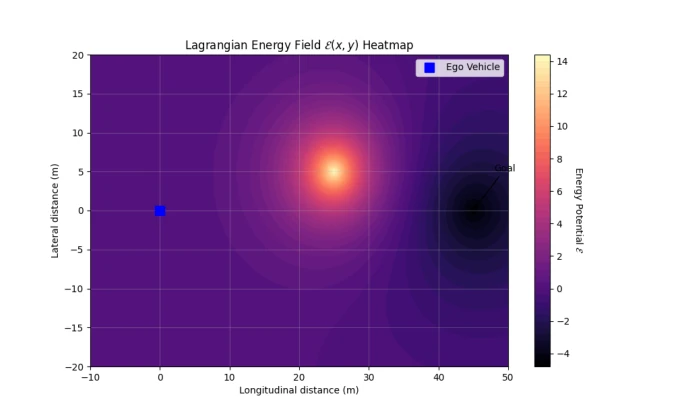

The name 'Lagrange' is quite physics-flavored, attempting to rein in VLMs using Lagrangian mechanics. It keenly points out the pain points of current end-to-end driving: dense models are like elephants, with good semantic understanding but heavy computation; sparse models are like cheetahs, fast but only recognizing whitelists; VLA models are like poets, able to discuss new things but actions are too discrete, causing cars to twitch when driven. Lagrange converts semantics into an energy field, letting the car glide in 'energy valleys', retaining VLM generalization ability while ensuring kinematic constraints. However, it still relies on RPN to generate bounding boxes; for black ice or puddles without geometric boundaries, this 'box theory' might still fail. It finds a delicate balance between open world and continuous control, but is still far from true 'frameless' perception, and MPPI sampling real-time performance in extremely complex scenarios still needs verification.
End-to-end autonomous driving is facing a split between 'semantic generalization' and 'motion control'. Dense architectures like UniAD [1] can build complete scenes, but computation overhead is huge and semantics are black-box, making it hard to distinguish smoke from concrete pillars. Sparse query methods like SparseDrive [2] are efficient but limited by closed-set classification, encountering OOD objects (like scattered cargo) leads to missed detection. Recent VLA models like OpenVLA [3] support open vocabulary, but their autoregressive discrete generation mechanism naturally conflicts with vehicle high-frequency continuous control, easily leading to non-smooth trajectories. Therefore, there is an urgent need for a framework that can understand unknown objects and output trajectories conforming to physical constraints. Existing solutions are either too slow, too naive, or too messy, lacking a unified efficient solution.
The overall process is divided into three steps. First, VLM-driven sparse Tokenizer uses class-agnostic RPN to extract regions, fusing geometry and VLM semantics into continuous Tokens, achieving open-vocabulary perception. Second, Intent-driven MLF Reasoner introduces vehicle state as query, filtering irrelevant entities through mask cross-attention, simulating human selective attention. Finally, Lagrangian Energy Decoder maps Tokens to scalar energy field E(x,y) on spatial coordinates, obstacles map to high-energy ridges, feasible paths to low-energy valleys. Decision process converted to action minimization problem, combined with velocity, acceleration, and jerk constraints, generating trajectories via MPPI solver. This design avoids direct action regression, instead guided by physics field, ensuring trajectories are both safe and smooth. Compared to direct regression, energy field can better express multi-modal distribution, avoiding mean collapse.
Tested on nuScenes, CODA, and Waymo. Under CODA long-tail scenarios, Lagrange's CROOD drops to 8.7%, significantly better than SparseDrive's 31.2% and UniAD's 28.4%, proving robustness to OOD. On nuScenes validation set, collision rate 0.25% better than UniAD, and FPS reaches 24.3, far exceeding OpenVLA's 1.2. In Waymo zero-shot transfer, collision rate only 0.45%, showing strong generalization. Sensor perturbation tests show, when single camera lost, still able to maintain low collision. Ablation experiments confirm, removing intent mask or kinematic constraints leads to significant performance drop, verifying necessity of each module. Figure 2 shows energy field visualization, intuitively explaining obstacle avoidance principle.
其他图片Other Figures

Figure 2: Qualitative visualization of the learned Lagrangian Energy Field E(x, y). The VLM tokenizer maps an unrecognizable OOD hazard into a high-potential scalar ridge (red), naturally repelling the MPPI-optimized trajectory (blue) into a safe, kinematically-feasible energy valley.